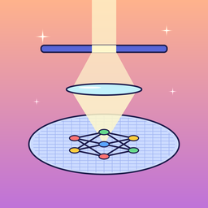
中文December 2026 · the Netherlands
Light · Chips · AI 1.1 is now a fully native iPhone and iPad app for ages 3–12 and their parents. No ads, no tracking, no sign-up.
Download on the App Store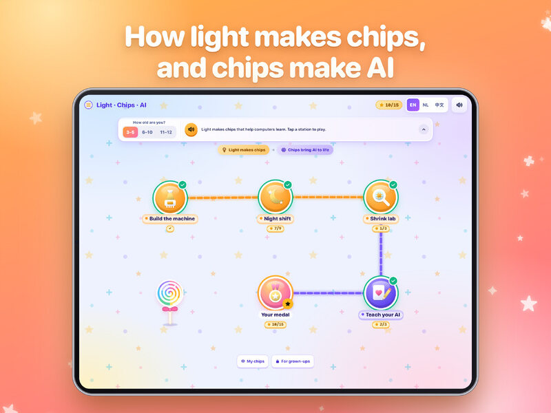
The AI in your phone runs on tiny chips, and those chips are printed with light. Grown-ups struggle to explain that, never mind to an eight-year-old.
Light · Chips · AI tries something different: don’t explain first, let the child do it.
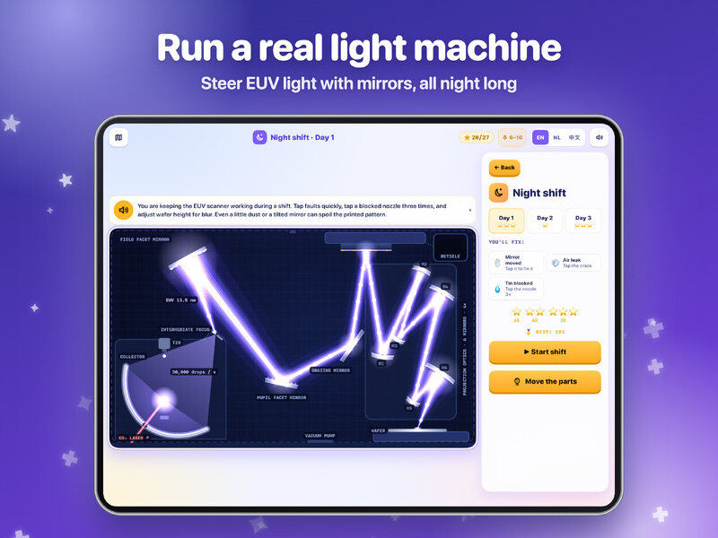
Children steer a beam of light with mirrors and keep a lithography machine running through a night shift.
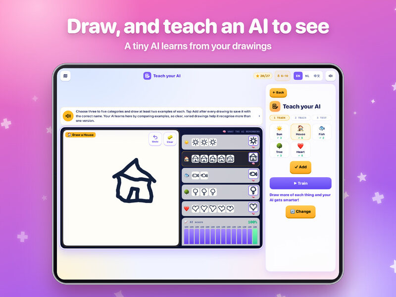
They teach a tiny AI to tell a house from a heart using their own wobbly drawings, and watch it get better with every example.
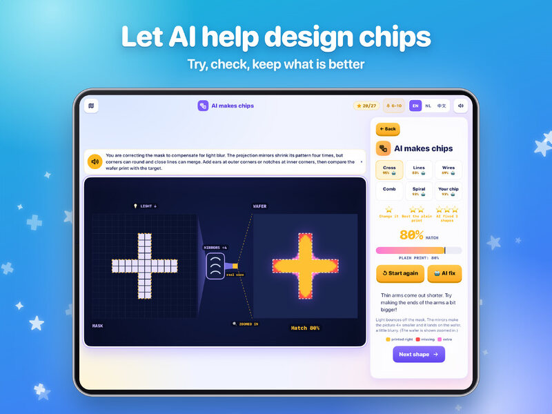
Try, check, keep what is better: the same idea real chip factories use to make tiny patterns print right.
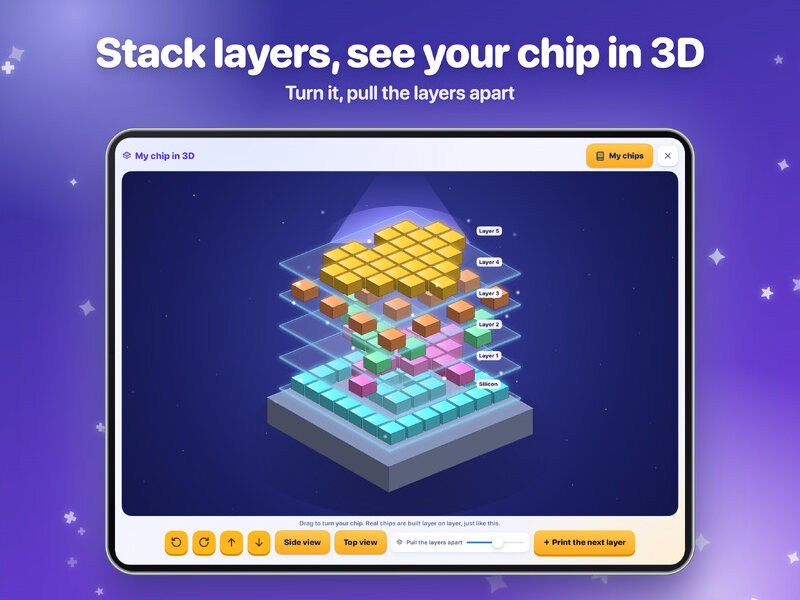
Draw a picture, watch the light print it layer by layer, then turn the finished chip around and pull the layers apart.
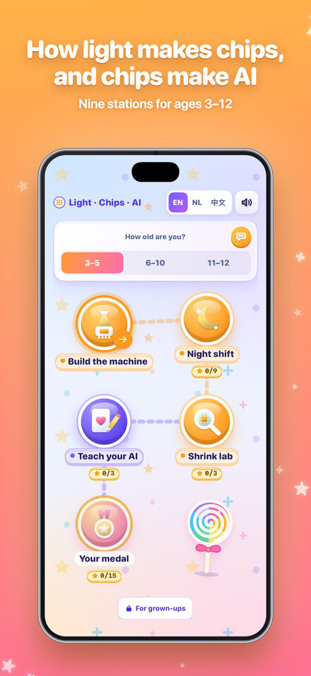
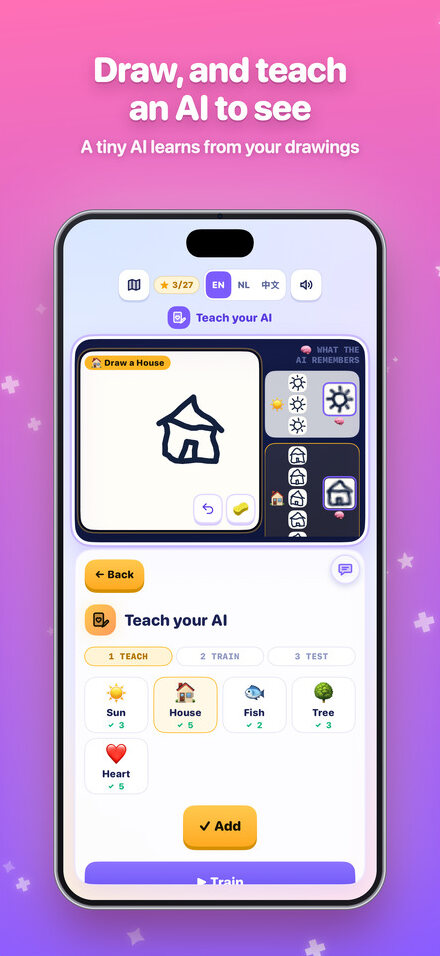
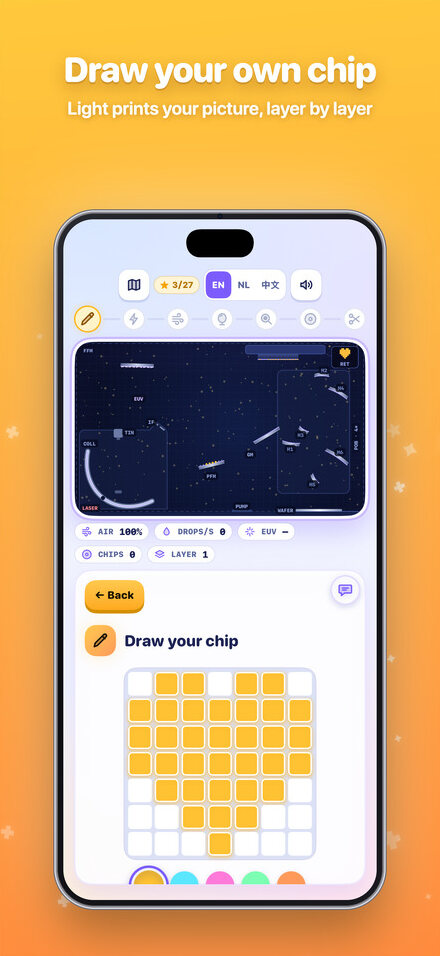
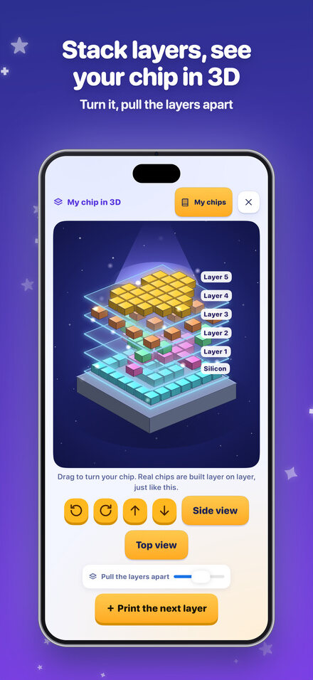
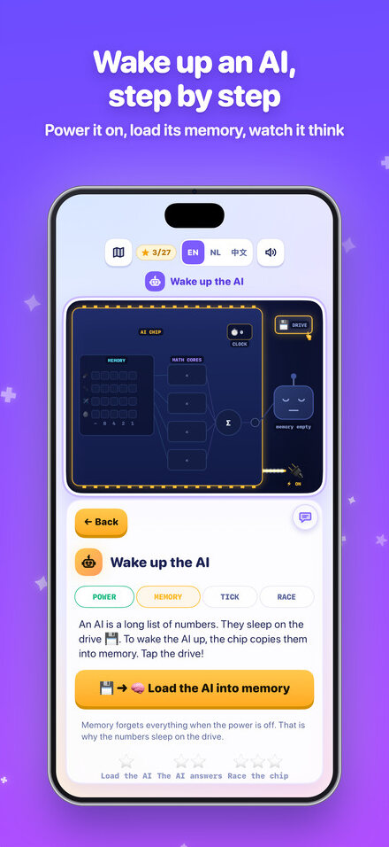
No ads, no analytics, no accounts, and it works offline. A grown-ups page explains the real science behind each station and lists its sources. Available in English, Dutch and Chinese.
Websites: chuang.nl (international) · chuanglu.top (mainland China)
2026 年 12 月 · 荷兰
《光 · 芯片 · AI》1.1 全新原生版，适合 3–12 岁孩子和家长一起玩。没有广告，不追踪，不用注册。
在 App Store 下载手机、平板、电脑里的 AI，都跑在很小很小的芯片上；而这些芯片，是用光“印”出来的。这件事大人也很难讲清楚，更别说给一个八岁的孩子讲。
《光 · 芯片 · AI》想换个方式：先别讲，先让孩子动手。
用镜子把一束光引到正确的地方，在“夜班”里让光刻机一直转下去。
用自己歪歪扭扭的手画，教一个小小的 AI 分清房子和爱心——画得越多，它认得越准。
试一试、查一查、更好就留下：真正的芯片厂也是用这个办法，让细小的图案印得准。
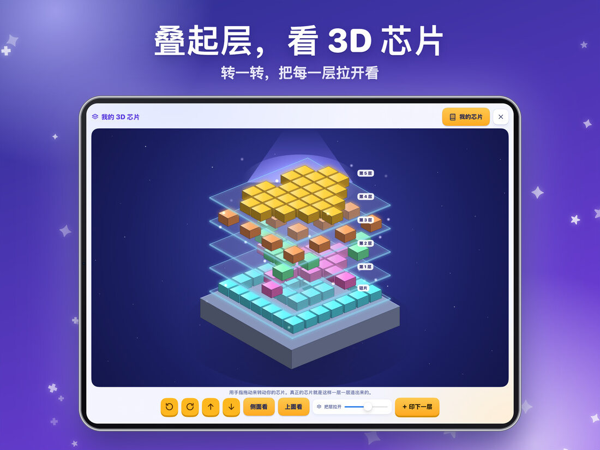
画一个图案，看光把它一层一层印出来，再把芯片转着看、把每一层拉开看。
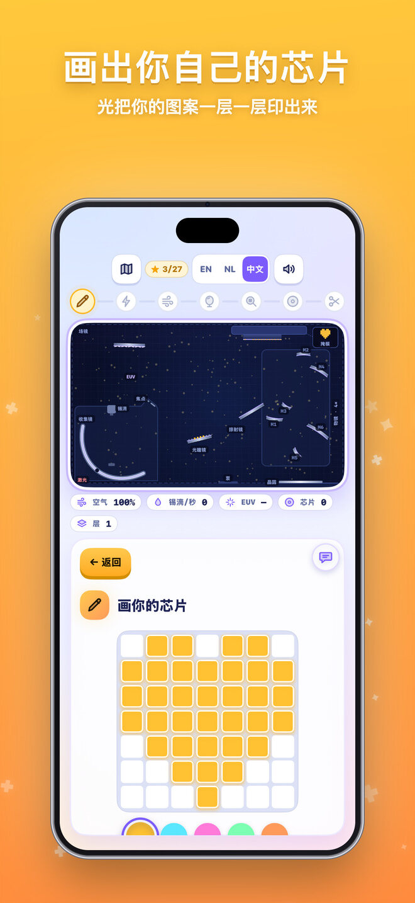
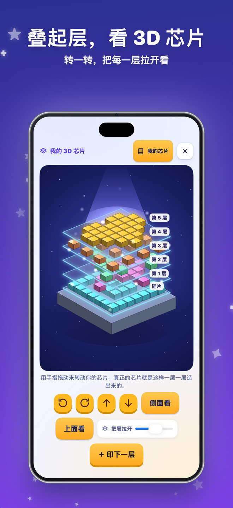
没有广告，没有数据统计，没有账号，不联网也能玩。App 里有“家长专区”，讲清楚每个关卡背后的真实知识，并列出资料来源。支持中文、英语、荷兰语。
网站：chuanglu.top（中国大陆访问）· chuang.nl（海外访问）